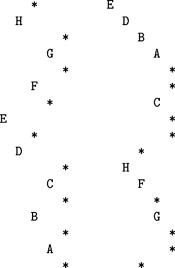
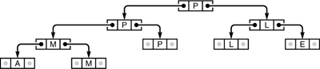
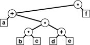

C++ Programming Robert Sedgewick - Princeton University Addison Wesley Professional Algorithms in C++, Parts 1–4: Fundamentals, Data Structure, Sorting, Searching, Third Edition
5.7. Recursive Binary-Tree Algorithms
The tree-traversal algorithms that we considered in Section 5.6 exemplify the basic fact that we are led to consider recursive algorithms for binary trees, because of these trees' very nature as recursive structures. Many tasks admit direct recursive divide-and-conquer algorithms, which essentially generalize the traversal algorithms. We process a tree by processing the root node and (recursively) its subtrees; we can do computation before, between, or after the recursive calls (or possibly all three).
We frequently need to find the values of various structural parameters for a tree, given only a link to the tree. For example, Program 5.17 comprises recursive functions for computing the number of nodes in and the height of a given tree. The functions follow immediately from Definition 5.6. Neither of these functions depends on the order in which the recursive calls are processed: they process all the nodes in the tree and return the same answer if we, for example, exchange the recursive calls. Not all tree parameters are so easily computed: for example, a program to compute efficiently the internal path length of a binary tree is more challenging (see Exercises 5.88 through 5.90).
Program 5.17. Computation of tree parameters|
We can use simple recursive procedures such as these to learn basic structural properties of trees.
int count(link h)
{
if (h == 0) return 0;
return count(h->l) + count(h->r) + 1;
}
int height(link h)
{
if (h == 0) return -1;
int u = height(h->l), v = height(h->r);
if (u > v) return u+1; else return v+1;
}
|
Another function that is useful whenever we write programs that process trees is one that prints out or draws the tree. For example, Program 5.18 is a recursive procedure that prints out a tree in the format illustrated in Figure 5.29. We can use the same basic recursive scheme to draw more elaborate representations of trees, such as those that we use in the figures in this book (see Exercise 5.85).
The output at the left results from using Program 5.18 on the sample tree in Figure 5.26, and exhibits the tree structure in a manner similar to the graphical representation that we have been using, rotated 90 degrees. The output at the right is from the same program with the print statement moved to the beginning; it exhibits the tree structure in a familiar outline format.

Program 5.18 is an inorder traversal—if we print the item before the recursive calls, we get a preorder traversal, which is also illustrated in Figure 5.29. This format is a familiar one that we might use, for example, for a family tree, or to list files in a tree-based file system, or to make an outline of a printed document, For example, doing a preorder traversal of the tree in Figure 5.19 gives a version of the table of contents of this book.
Our first example of a program that builds an explicit binary tree structure is associated with the find-the-maximum application that we considered in Section 5.2. Our goal is to build a tournament: a binary tree where the item in every internal node is a copy of the larger of the items in its two children. In particular, the item at the root is a copy of the largest item in the tournament. The items in the leaves (nodes with no children) constitute the data of interest, and the rest of the tree is a data structure that allows us to find the largest of the items efficiently.
Program 5.18. Quick tree-print function|
This recursive program keeps track of the tree height and uses that information for indentation in printing out a representation of the tree that we can use to debug tree-processing programs (see Figure 5.29). It assumes that items in nodes are of type Item, for which operator<< is defined through overloading.
void printnode(Item x, int h)
{ for (int i = 0; i < h; i++) cout << " ";
cout << x << endl;
}
void show(link t, int h)
{
if (t == 0) { printnode('*', h); return; }
show(t->r, h+1);
printnode(t->item, h);
show(t->l, h+1);
}
|
Program 5.19 is a recursive program that builds a tournament from the items in an array. An extension of Program 5.6, it uses a divide-and-conquer strategy: To build a tournament for a single item, we create (and return) a leaf containing that item. To build a tournament for N > 1 items, we use the divide-and-conquer strategy: Divide the items in half, build tournaments for each half, and create a new node with links to the two tournaments and with an item that is a copy of the larger of the items in the roots of the two tournaments.
Figure 5.30 is an example of an explicit tree structure built by Program 5.19. Building a recursive data structure such as this one is perhaps preferable to finding the maximum by scanning the data, as we did in Program 5.6, because the tree structure provides us with the flexibility to perform other operations. The very operation that we use to build the tournament is an important example: Given two tournaments, we can combine them into a single tournament in constant time, by creating a new node, making its left link point to one of the tournaments and its right link point to the other, and taking the larger of the two items (at the roots of the two given tournaments) as the largest item in the combined tournament. We also can consider algorithms for adding items, removing items, and performing other operations. We shall not consider such operations here because we consider similar data structures with this flexibility in Chapter 9.
This figure depicts the explicit tree structure that is constructed by Program 5.19 from the input A M P L E. The data items are in the leaves. Each internal node has a copy of the larger of the items in its two children, so, by induction, the largest item is at the root.

Program 5.19. Construction of a tournament|
This recursive function divides an array a[l], . . . , a[r] into the two parts a[l], . . ., a[m] and a[m+1], . . . , a[r], builds tournaments for the two parts (recursively), and makes a tournament for the whole array by setting links in a new node to the recursively built tournaments and setting its item value to the larger of the items in the roots of the two recursively built tournaments.
struct node
{ Item item; node *l, *r;
node(Item x)
{ item = x; l = 0; r = 0; }
};
typedef node* link;
link max(Item a[], int l, int r)
{ int m = (l+r)/2;
link x = new node(a[m]);
if (l == r) return x;
x->l = max(a, l, m);
x->r = max(a, m+1, r);
Item u = x->l->item, v = x->r->item;
if (u > v)
x->item = u; else x->item = v;
return x;
}
|
Indeed, tree-based implementations for several of the generalized queue ADTs that we discussed in Section 4.6 are a primary topic of discussion for much of this book. In particular, many of the algorithms in Chapters 12 through 15 are based on binary search trees, which are explicit trees that correspond to binary search, in a relationship analogous to the relationship between the explicit structure of Figure 5.30 and the recursive find-the-maximum algorithm (see Figure 5.6). The challenge in implementing and using such structures is to ensure that our algorithms remain efficient after a long sequence of insert, remove, and other operations.
Our second example of a program that builds a binary tree is a modification of our prefix-expression–evaluation program in Section 5.1 (Program 5.4) to construct a tree representing a prefix expression, instead of just evaluating it (see Figure 5.31). Program 5.20 uses the same recursive scheme as Program 5.4, but the recursive function returns a link to a tree, rather than a value. We create a new tree node for each character in the expression: Nodes corresponding to operators have links to their operands, and the leaf nodes contain the variables (or constants) that are inputs to the expression.
This tree is constructed by Program 5.20 for the prefix expression * + a * * b c + d e f. It is a natural way to represent the expression: Each operand is in a leaf (which we draw here as an external node), and each operator is to be applied to the expressions represented by the left and right subtrees of the node containing the operator.

Translation programs such as compilers often use such internal tree representations for programs, because the trees are useful for many purposes. For example, we might imagine operands corresponding to variables that take on values, and we could generate machine code to evaluate the expression represented by the tree with a postorder traversal. Or, we could use the tree to print out the expression in infix with an inorder traversal or in postfix with a postorder traversal.
We considered the few examples in this section to introduce the concept that we can build and process explicit linked tree structures with recursive programs. To do so effectively, we need to consider the performance of various algorithms, alternate representations, non-recursive alternatives, and many other details. However, we shall defer consideration of tree-processing programs in further detail until Chapter 12, because we use trees primarily for descriptive purposes in Chapters 7 through 11. We return to explicit tree implementations in Chapter 12 because they form the basis of numerous algorithms that we consider in Chapters 12 through 15.
Program 5.20. Construction of a parse tree|
Using the same strategy that we used to evaluate prefix expressions (see Program 5.4), this program builds a parse tree from a prefix expression. For simplicity, we assume that operands are single characters. Each call of the recursive function creates a new node with the next character from the input as the token. If the token is an operand, we return the new node; if it is an operator, we set the left and right pointers to the tree built (recursively) for the two arguments.
char *a; int i; struct node
{ Item item; node *l, *r;
node(Item x)
{ item = x; l = 0; r = 0; }
};
typedef node* link;
link parse()
{ char t = a[i++]; link x = new node(t);
if ((t == '+') || (t == '*'))
{ x->l = parse(); x->r = parse(); }
return x;
}
|
Exercises |  5.85 Modify Program 5.18 to output a PostScript program that draws the tree, in a format like that used in Figure 5.23, but without the small boxes to represent the external nodes. Use moveto and lineto to draw lines, and the user-defined operator 5.85 Modify Program 5.18 to output a PostScript program that draws the tree, in a format like that used in Figure 5.23, but without the small boxes to represent the external nodes. Use moveto and lineto to draw lines, and the user-defined operator
/node { newpath moveto currentpoint 4 0 360 arc fill} def
to draw nodes. After this definition, the call node draws a black dot at the coordinates on the stack (see Section 4.3). | |  5.86 Write a program that counts the leaves in a binary tree. 5.86 Write a program that counts the leaves in a binary tree.
| | 5.87 Write a program that counts the number of nodes in a binary tree that have one external and one internal child. | | 5.88 Write a recursive program that computes the internal path length of a binary tree, using Definition 5.6. | | 5.89 Determine the number of function calls made by your program when it is computing the internal path length of a binary tree. Prove your answer by induction. | | | |  5.90 Write a recursive program that computes the internal path length of a binary tree in time proportional to the number of nodes in the tree. 5.90 Write a recursive program that computes the internal path length of a binary tree in time proportional to the number of nodes in the tree.
| | 5.91 Write a recursive program that removes all the leaves with a given key from a tournament (see Exercise 5.59). |
|